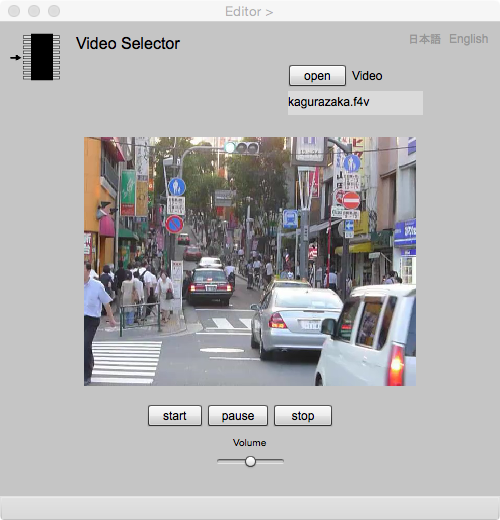

Video Selector
Video Selector acquires movie file (mp4) as the attribute of a feature. Video file becomes an attribute by clicking "add" button in Editor page after opening the video in Video Selector page. In gittok, video data is an url to indicate where that data is stored. The data type is VideoURL.
Video Selector

Figure 1. VIdeo Selector
Fields
Video
URL of of thevideo file.
Buttons
open
Video file is opened by clicking this button. Video file should be stored in the folder "videos" located under the project folder.
play
Video movie is played by clicking this button.
pause
Video is paused by clicking this button. The label is replaced by "restart" after clicking the button. Video can be restared by clicking "restart" button.
stop
Video is stopped by clicking this button.
Volume
The volume of the sound changed by moving the slider.
日本語
今あなたが読んでいるドキュメントが表示されます．
English
You can read the tutorial written in English.